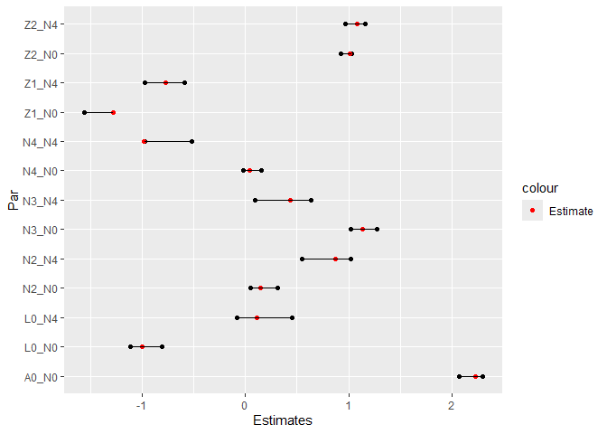
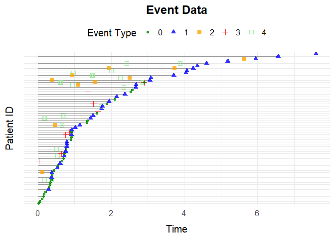
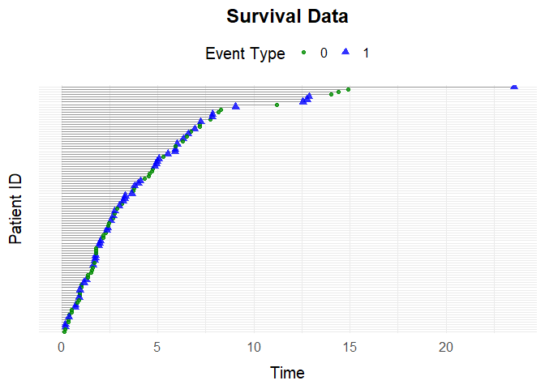
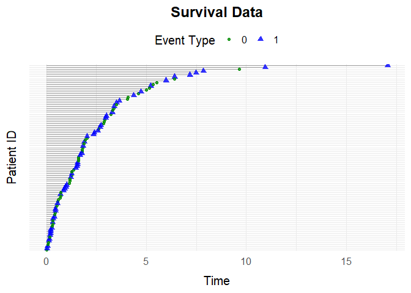
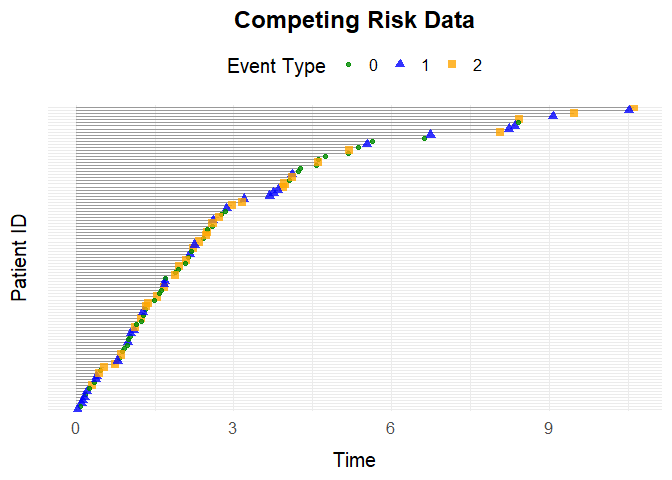
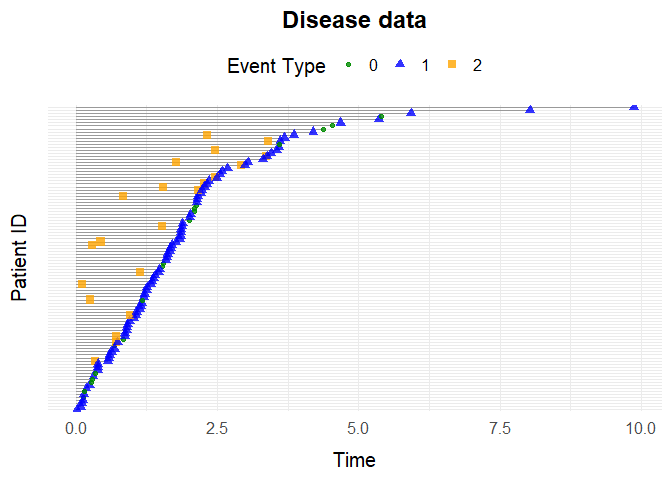
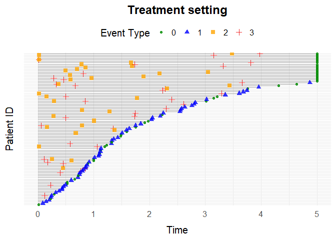
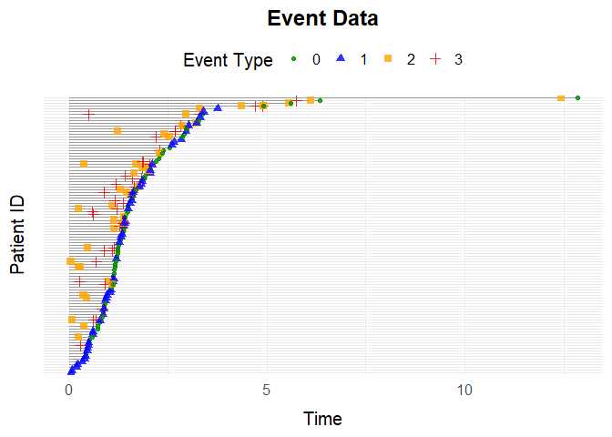
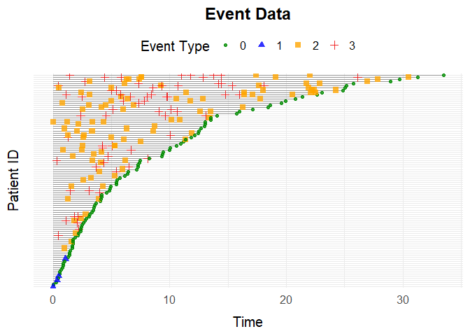

-
simevent
- Installation
- Usage
- Description
-
Example 1: General Event History Simulation with
simEventData - Example 2: Survival Data with
simSurvData - Example 3: Competing Risk Data with
simCRdata - Example 4: Health Care Data with
simDisease - Example 5: Health Care Data with
simTreatment - Example 6: Time Varying Effects with
simEventTV - Example 7: Simulating data from data
- Example 8: Interventions
- Example 9: Intensities dependent on time since last event with
simEventDataTdPhi
simevent
The simevent package provides tools for simulating and analyzing complex continuous-time health care data.The simulated data includes variables that can be interpreted as treatment decisions, disease progression, and health factors.
Installation
You can install the development version of simevent from GitHub with:
# install.packages("pak")
pak::pak("miclukacova/simevent")Description
One of the core functions is the flexible function simEventData, which simulates from a Cox proportional hazards model with Weibull hazards. Users can specify parameters and covariate effects to create custom scenarios. In addition, the package offers several wrapper functions for common settings (e.g., survival data, competing risks) built on top of simEventData. The function simEventTV is an adaptation of the function simEventData. It allows for time varying effects. This feature results in a slightly slower simulation procedure, so when possible simEventData is recommended.
Another branch of the package concerns simulating data from data. For this the package has two functions, respectively simEventCox and simEventObj. The first function takes as input Cox regressions and simulates data using these, while the latter takes as input a general model equipped with a predict2 method.
Once data is simulated the package includes functions for plotting (plotEventData) and formatting (IntFormatData).
One can perform interventions using the function alphaSimDisease and calculate the effect of interventions using intEffectAlphaDisease.
Below is a table attempting to provide an overview of the package functions. Each function in the package is described and an example is provided.
Functions relating to simEventData
| Function | Description | Example | Example |
|---|---|---|---|
simEventData() |
Simulates event history data in the most general setting using Cox proportional hazard model and Weibull hazards. |
N, beta, eta, nu
|
simEventData(N = 5000) |
simSurvData() |
Simulates survival data. |
N, beta, eta, nu, cens
|
simSurvData(N) |
simCRdata() |
Simulates data from a competing risk setting with two competing causes. |
N, beta, eta, nu, cens
|
simCRdata(N) |
simDisease() |
The function simulates health care data from a setting where patients can experience different events: Censoring, Death, Disease. The effects of the various process on one another can be specified by the arguments beta_X_Y. |
N, beta_L0_L
|
simDisease(N = 100, beta_L0_L = 1) |
simTreatment() |
Simulates event history data with four types of events representing censoring (0), death (1), treatment (2), and covariate change (3). The effects of the various process on one another can be specified by the arguments beta_X_Y. |
N, beta_L_A
|
simTreatment(N = 100, beta_L_A = 1) |
simDropIn() |
Simulates data corresponding to N individuals that are at risk for 4 or 5 events. Censoring (C), Death (D), Drop In Initiation (Z), Change in Covariate Process (L) and optionally Treatment (A). |
N, beta_L_A
|
simDropIn(N = 100, beta_L_A = 1) |
simEventTV() |
Simulates general event history data in a setting with time-varying effects. |
N, beta, tv_eff, t_prime
|
simTreatment(N = 100, beta, tv_eff, t_prime) |
Functions for treating simulated data
| Function | Description | Key Arguments | Example |
|---|---|---|---|
IntFormatData() |
Transforms data into a so called tstart-tstop format, used when fitting Cox proportional hazards using the survival package. |
data, N_cols
|
IntFormatData(data, N_cols = 8:12) |
plotEventData() |
Plots the event histories. |
data, title
|
plotEventData(data) |
Functions relating to simulating from data
| Function | Description | Key Arguments | Example |
|---|---|---|---|
simEventCox() |
Simulates new data using fitted Cox proportional hazard models |
N, cox_fits, old_vars
|
simEventCox(N, cox_fits, old_vars = old_vars) |
simEventObj() |
Simulates new data using a general model |
N, obj, old_vars
|
simEventObj(100, obj, old_vars = old_vars) |
Functions for performing interventions
| Function | Description | Key Arguments | Example |
|---|---|---|---|
alphaSimDisease() |
Simulation and estimation of event history data from disease setting with shape parameter of disease process multiplied by alpha. |
N, alpha, tau, years_lost
|
alphaSimDisease(N = 10^4, alpha = 0.5, tau = 5, years_lost = FALSE) |
alphaSimDropIn() |
Simulation and estimation of event history data from Drop In setting with shape parameter of Drop In process multiplied by alpha. |
N, alpha, tau, years_lost
|
alphaSimDropIn(N = 10, alpha = 0.5, tau = 5, years_lost = F) |
alphaSimTreat() |
Simulation and estimation in treatment setting with modified shape parameter of treatment Process |
N, alpha, tau, years_lost
|
alphaSimTreat(N = 10, alpha = 0.5, tau = 5, years_lost = F) |
intEffectAlphaDisease() |
Simulates data from the disease setting in two scenarios. Under intervention on the shape parameter of the disease process is multiplied by , and a baseline (non-intervened) scenario.It computes the proportion of individuals who experience death or disease by a specified time in the group , optionally returning years_lost. |
N, alpha, tau, years_lost
|
intEffectAlphaDisease(N = 10, alpha = 0.5, tau = 5, years_lost = F) |
intEffectAlphaDropIn() |
Does the same as above, just in the Drop In setting. |
N, alpha, tau
|
intEffectAlphaDropIn(N = 10, alpha = 0.5, tau = 5) |
intEffectAlphaTreat() |
Does the same as above, just in the Treatment setting. |
N, alpha, tau, years_lost
|
intEffectAlphaTreat(N = 10, alpha = 0.5, tau = 5, years_lost = F) |
Example 1: General Event History Simulation with simEventData
This is an example of simulating data using simEventData.simEventData is a function for general event history simulations. The function is quite flexible, and does therefore take many arguments. You can read about the different arguments on the help page
?simEventDataThe number of simulated events corresponds to the length of the vectors , , or the number of columns in .
Below, we create a 9x5 beta matrix for 5 event processes and 4 baseline covariates:
You can add baseline covariates by supplying generator functions:
func1 <- function(N) rbinom(N, 1, 0.2)
func2 <- function(N) rnorm(N)
add_cov <- list("Z1" = func1, "Z2" = func2)Define an function to specify risk windows for recurrent events:
# at risk function
at_risk <- function(events) {
return(c(
1,1, # Always at risk for event 0 and 1
as.numeric(events[3] < 2), # Event 2 can occur twice
as.numeric(events[4] < 1), # Event 3 can occur once
as.numeric(events[5] < 2))) # Event 4 can occur twice
}Optionally one can define an function to specify risk windows as a function of covariates:
# at risk function
at_risk_cov <- function(covariates) {
return(c(
1,1, # The covariates do not change the risk of event 0 and 1
as.numeric(covariates[1] < 0.5), # Only at risk of event 2 if L0 < 0.5
as.numeric(covariates[2] == 1), # Only at risk of event 3 if A0 = 1
1)) # The covariates do not change the risk of event 4
}Simulate data for 5000 individuals:
set.seed(973)
data <- simEventData(N = 5000, beta = beta, add_cov = add_cov, at_risk = at_risk,
at_risk_cov = at_risk_cov)Preview the simulated data:
head(data)
#> Key: <ID>
#> ID Time Delta L0 A0 Z1 Z2 N0 N1 N2
#> <int> <num> <int> <num> <num> <num> <num> <num> <num> <num>
#> 1: 1 0.5067418 4 0.0482511 1 0 0.9036369 0 0 0
#> 2: 1 0.7741479 0 0.0482511 1 0 0.9036369 1 0 0
#> 3: 2 0.7952969 1 0.2186699 0 0 1.0631460 0 1 0
#> 4: 3 4.3490086 1 0.5021846 0 0 -0.2266280 0 1 0
#> 5: 4 0.1689083 0 0.4053148 1 0 1.2534397 1 0 0
#> 6: 5 1.5183445 3 0.3986500 1 0 -0.9204445 0 0 0
#> N3 N4
#> <num> <num>
#> 1: 0 1
#> 2: 0 1
#> 3: 0 0
#> 4: 0 0
#> 5: 0 0
#> 6: 1 0Formatting Data for Cox Regression
Transform the data into tstart-tstop format with IntFormatData (specify columns with counting process data):
data_int <- IntFormatData(data, N_cols = 8:12)
head(data_int)
#> ID Time Delta L0 A0 Z1 Z2 N0 N1 N2
#> <int> <num> <int> <num> <num> <num> <num> <num> <num> <num>
#> 1: 1 0.5067418 4 0.0482511 1 0 0.9036369 0 0 0
#> 2: 1 0.7741479 0 0.0482511 1 0 0.9036369 0 0 0
#> 3: 2 0.7952969 1 0.2186699 0 0 1.0631460 0 0 0
#> 4: 3 4.3490086 1 0.5021846 0 0 -0.2266280 0 0 0
#> 5: 4 0.1689083 0 0.4053148 1 0 1.2534397 0 0 0
#> 6: 5 1.5183445 3 0.3986500 1 0 -0.9204445 0 0 0
#> N3 N4 k tstart tstop
#> <num> <num> <int> <num> <num>
#> 1: 0 0 1 0.0000000 0.5067418
#> 2: 0 1 2 0.5067418 0.7741479
#> 3: 0 0 1 0.0000000 0.7952969
#> 4: 0 0 1 0.0000000 4.3490086
#> 5: 0 0 1 0.0000000 0.1689083
#> 6: 0 0 1 0.0000000 1.5183445Fit Cox models for processes 0 and 4:
library(survival)
# Process 0
survfit0 <- coxph(Surv(tstart, tstop, Delta == 0) ~ L0 + A0 + Z1 + Z2 + N2 + N3 + N4,
data = data_int)
# Process 4
survfit4 <- coxph(Surv(tstart, tstop, Delta == 4) ~ L0 + Z1 + Z2 + N2 + N3 + N4,
data = data_int[(N4 < 2) & (A0 == 1)])Visualize estimated coefficients alongside true values:
CIs <- cbind("Par" = c(paste0(rownames(confint(survfit0)), "_N0"),
paste0(rownames(confint(survfit4)), "_N4")),
rbind(confint(survfit0), confint(survfit4)))
rownames(CIs) <- NULL
colnames(CIs) <- c("Par", "Lower", "Upper")
CIs <- data.table(CIs)
CIs[, True_val := c(beta[-c(5,6),1],
beta[-c(2,5,6),5])]
CIs$Lower <- as.numeric(CIs$Lower)
CIs$Upper <- as.numeric(CIs$Upper)
pp <- ggplot(data = CIs)+
geom_point(aes(y = Par, x = Lower))+
geom_point(aes(y = Par, x = Upper))+
geom_point(aes(y = Par, x = True_val, col = "Estimate"))+
scale_color_manual(values = c("Estimate" = "red"))+
geom_segment(aes(y = Par, yend = Par, x = Lower, xend = Upper))+
xlab("Estimates")
pp
Visualize Event Histories
Plot the first 100 individuals’ event histories:
plotEventData(data[1:100,])
Using override_beta
You can override specific entries in the beta matrix. For example, set the effect of on processes and to zero:
data <- simEventData(N = 1000, beta = beta, add_cov = add_cov, at_risk = at_risk,
override_beta = list("L0" = c("N0" = 0, "N1" = 0)))You can also specify non-linear effects, e.g., effect of on to increase by 2 if :
data <- simEventData(N = 1000, beta = beta, add_cov = add_cov, at_risk = at_risk,
override_beta = list("N2 > 1" = c("N1" = 2)))Additionally the argument can be used to specify interaction effects, e.g., if we want an interaction effect of 1 between L0 and N3 on N1 we can specify the argument:
data <- simEventData(N = 3*10^4, beta = beta, add_cov = add_cov, at_risk = at_risk,
override_beta =list("L0 * N3" = c("N1" = 1)))A further example of the arguments use, is that we can use it to specify effects that depend on time. E.g. if we wish for an additional effect on N2 of 0.4 if T1 > 1, then we can simulate as follows
data <- simEventData(N = 10000, beta = beta, add_cov = add_cov, at_risk = at_risk,
override_beta =list("T1 > 1" = c("N2" = 1)))Example 2: Survival Data with simSurvData
The function simSurvData allows you to simulate survival data for individuals at risk of both censoring (0) and an event (1).
By default, the function simulates survival data with no covariate effects:
data <- simSurvData(100)
plotEventData(data, title = "Survival Data")
You can specify how baseline covariates and affect the risk of censoring and death through the matrix. For example:
# Effects of L0 and A0 on the censoring hazard (first column)
beta_C <- c(0, 0)
# Effects of L0 and A0 on the death hazard (second column)
beta_D <- c(1, -1)
# Combine into a 2x2 matrix where columns represent censoring and death hazards
beta <- cbind(beta_C, beta_D)You can also set the Weibull shape () and scale () parameters for both censoring and death hazards:
Use the specified parameters to simulate data and visualize it:
data <- simSurvData(100, beta = beta, eta = eta, nu = nu)
plotEventData(data, title = "Survival Data")
Example 3: Competing Risk Data with simCRdata
Simulate competing risk data (similar parameters as above):
data <- simCRdata(100)
plotEventData(data, title = "Competing Risk Data")
Example 4: Health Care Data with simDisease
The function simDisease simulates health care data from a setting where patients can experience 3 different events:
- Censoring (coded as 0)
- Death (coded as 1), and
- Disease (coded as 2).
You can customize the simulation scenarios by adjusting the function arguments. For detailed information about the parameters, see the help page.
Example simulation
data <- simDisease(N = 100,
cens = 1,
eta = c(0.1,0.3,0.1),
nu = c(1.1,1.3,1.1),
beta_L0_L = 1,
beta_A0_L = -1.1,
beta_L_D = 1,
beta_L0_D = 0)
plotEventData(data, title = "Disease data")
Example 5: Health Care Data with simTreatment
Simulate data with a covariate process and treatment process. Default simulation:
data <- simTreatment(100)Custom scenario:
data <- simTreatment(N = 100,
beta_L_A = 1,
beta_L_D = 1,
beta_A_D = -1,
beta_A_L = -0.5,
beta_L0_A = 1,
eta = rep(0.1, 4),
nu = rep(1.1, 4),
followup = 5,
cens = 1,
op = 1)Plot
plotEventData(data, title = "Treatment setting")
Example 6: Time Varying Effects with simEventTV
One can simulate a setting with time-varying effects with the function simEventTV. After the time an additional effect of is added to the beta matrix.
set.seed(6258)
eta <- rep(0.1, 4)
term_deltas <- c(0,1)
tv_eff <- matrix(0.5, ncol = 4, nrow = 6)
beta <- matrix(nrow = 6, ncol = 4, 0.5)
t_prime <- 1
data <- simEventTV(N = 100, t_prime = t_prime, tv_eff = tv_eff, eta = eta,
term_deltas = term_deltas, beta = beta, lower = 10^(-15), upper = 10^2,
max_events = 5)
plotEventData(data)
Example 7: Simulating data from data
Imagine we have observed data:
set.seed(373)
beta = matrix(c(0.5,-1,-0.5,0.5,0,0.5), ncol = 3, nrow = 2)
data <- simCRdata(N = 1000, beta = beta)Using simEventCox
If we want to use simEventCox for simulating new data from the observed data, we first need to fit Cox models:
cox1 <- coxph(Surv(Time, Delta == 1) ~ L0 + A0, data = data)
cox2 <- coxph(Surv(Time, Delta == 2) ~ L0 + A0, data = data)Then we can call the function simEventCox providing the fitted Cox models as arguments:
cox_fits <- list("Process 1" = cox1, "Process 2" = cox2)
old_vars <- data[,c(4,5)]
new_data <- simEventCox(100, cox_fits, old_vars = old_vars)The new simulated data looks like:
head(new_data)
#> Key: <ID>
#> ID Time Delta L0 A0 Process 1 Process 2
#> <int> <num> <num> <num> <num> <num> <num>
#> 1: 1 0.4931728 1 0.5363954 0 0 1
#> 2: 1 4.0046486 0 0.5363954 0 1 1
#> 3: 2 0.6828662 1 0.3144497 0 0 1
#> 4: 2 9.8772172 0 0.3144497 0 1 1
#> 5: 3 0.8909987 1 0.9335247 1 0 1
#> 6: 3 4.2916262 0 0.9335247 1 1 1Using simEventObj
If we want to use simEventObj for simulating new data from the observed data, we need to fit a general model to data and equip it with a predict2 method. We can for example fit a random forest model using rfsrc from the randomForestSRC package:
RF_fit <- randomForestSRC::rfsrc(Surv(Time, Delta) ~ L0 + A0, data = data)Then we equip it with a predict2 model
predict2 <- function(obj, ...) {
UseMethod("predict2")
}
predict2.rfsrc <- function(obj, sim_data, ...){
preds <- stats::predict(RF_fit, sim_data)
list(time = preds$time.interest, chf = preds$chf)
}Then we can call the function simEventObj providing the fitted Random Forest as argument:
old_vars = data[, c("L0", "A0")]
new_data <- simEventObj(100, RF_fit, old_vars = old_vars)The new simulated data looks like:
head(new_data)
#> Key: <ID>
#> ID Time Delta L0 A0 N1 N2
#> <int> <num> <int> <num> <num> <num> <num>
#> 1: 1 9.9452423 1 0.730683018 0 1 0
#> 2: 2 9.9452423 1 0.057044588 0 1 0
#> 3: 3 0.5861219 1 0.006538616 1 1 0
#> 4: 4 4.5871502 1 0.921506565 1 1 0
#> 5: 5 1.8056792 2 0.240172203 0 0 1
#> 6: 6 9.9452423 1 0.988296003 0 1 0Example 8: Interventions
Say you want to perform an intervention in the Drop In setting by scaling the intensity of one of your counting processes. Data without intervention can be simulated by scaling with the factor 1:
alphaSim(N = 10^3, alpha = 1, tau = 5, setting = "Drop In")
#> $effectDeath
#> [1] 0.09533074
#>
#> $effectSetting
#> [1] 0.6789883By default the function returns the proportion of individuals who experience death and the proportion of individuals who experience Drop In by a specified time in group . The user can specify what gets returned by the function call with use of the arguments years_lost and return_data. If the former is set to TRUE the function returns number of years lost before of death and Drop In. If the latter is set to TRUE the function call returns the simulated data.
To compare a non intervened scenario with a non intervened scenario, the function intEffectAlphaTreat can be used. This function simulates data from the Drop In setting in two scenarios. Under the intervention on the shape parameter of the Drop In process, which is multiplied by , and a baseline (non-intervened) scenario. It computes the proportion of individuals who experience death or Drop In by a specified time in the group , optionally returning years lost. The function can also plot a sample of the event data for each scenario for comparison.
intEffectAlpha(N = 1000, alpha = 0.7, tau = 5, years_lost = TRUE, a0 = 1, plot = TRUE,
setting = "Drop In")
#> $effect_2
#> [1] 1.569689
#>
#> $effect_death
#> [1] 0.2871026Example 9: Intensities dependent on time since last event with simEventDataTdPhi
Imagine you are interested in an intensity that depends on time since last event. Assume the event-specific intensity to have the form
\lambda^x(t \mid \mathcal F_t) = R^x(t \mid \mathcal F_t) \,\eta^x \nu^x t^{\nu^x-1} \,\phi^x(t \mid \mathcal F_t), where \phi^x(t \mid \mathcal F_t) = \exp\left( L^\top \beta_1 + (T^* - t)\beta_2 \right), and T^* denotes the most recent event time. Assume \beta_2 > 0. Simulation from this setting is done by using the function simEventDataTdPhi.
beta <- matrix(rnorm(4*6, 0, 0.1), ncol = 4)
data <- simEventDataTdPhi(N = 100, beta2 = c(0.01,2,0,0.1),
beta = beta, upper = 10^20, max_iter = 10^3)
plotEventData(data)